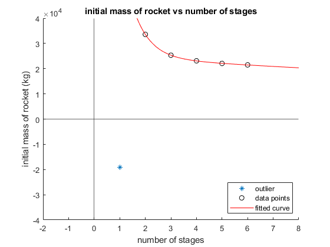

dV = 9200;
Isp = 360;
m_pay = 1000;
f_inert = .12;
g0 = 9.81;
initialmasses = zeros(1,6);
for stages = 1:6
dV = 9200 / stages;
numerator = exp(dV / (g0 * Isp)) * (1 - f_inert);
denominator = 1 - f_inert * exp(dV / (g0 * Isp));
m_initial = m_pay * (numerator / denominator)^stages;
initialmasses(stages) = m_initial;
end
hold on
plot(1,initialmasses(1),'*');
initialmasses = initialmasses(2:end);
xmat = (2:6)';
f = fit(xmat,initialmasses','exp2');
plot(2:6,initialmasses,'color','k','linestyle','none','marker','o');
xline(0);
yline(0);
xlim([-2 8])
ylim([-40000 40000]);
title("initial mass of rocket vs number of stages");
legend("outlier","data points");
legend('location','southeast');
plot(f);
xlabel("number of stages");
ylabel("initial mass of rocket (kg)");
